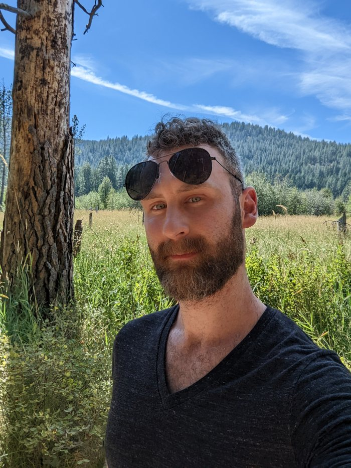
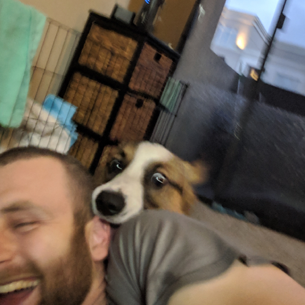

AI Engineer, Data Scientist, Statistician, Enjoyer of the outdoors

I’m an AI/ML engineer and data scientist focused on building practical solutions at the intersection of knowledge systems, large language models, and predictive analytics.
I run a consultancy, Prudent Patterns where I help startups and more seasoned companies acquire their footing in the space of extracting value from their data and create impactful AI solutions using the latest developments in this rapidly evolving field. I also enjoy teaching stakeholders about the current ecosystem of AI to help them make informed decisions about how to best leverage these technologies.
If you’d like to discuss potential collaborations or learn more about AI solutions for your business, feel free to , I’d love to connect.
🧠Pyllments is a Python framework I am currently developing for quickly building and deploying LLM-powered applications, batteries included. By combining the separate elements in various flows, it enables the quick deployment of an infinitely customizeable user interface with minimal overhead of projects as simple as a bare-bones chatbot to an entire RAG application. It also enables lightning-quick API creation over existing workflows by simply attaching special API elements that trigger and capture the results of any of the specified elements. It enables quick and simple iteration and experimentation over a large array of LLM use cases through its modularity, composability, and extensibility.
{kind=link}
{kind=link}
{kind=link}
🦛Hippograph is another project of mine. It’s a portmanteau of hippocampus and graph, as well as a play on the word hippogriff, y’know, the mythical creature(yeah, sometimes I consider myself clever). As the name suggests, it uses knowledge graphs as a structured memory for answering questions about corpuses of data, which it first deconstructs to the fundamentals necessary for approaching the desired lines of questioning. It’s easier demo’d than said, so I’d suggest you check out the video on its site.
For more on the combination of LLMs and knowledge graphs, I have an entire in-depth series of posts on it in my technical blog.
⛰️🌲
I absolutely love the outdoors and try to get out as often as possible. Sometimes, the laptop comes along for the ride, but usually not.

🐶
I am also an avid enjoyer of Corgis. A corgoisseur, one may say.
